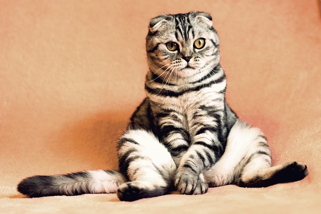

Introduction
Welcome to the world of cats! This article is all about our furry friends and their fun behaviors. Whether you're a cat owner or just curious, you'll find something interesting here!
What is a Cat?üò∫
A cat is a small, furry animal that is part of the feline family. This group also includes big cats like lions and tigers. But unlike those wild cousins, house cats love living with people.
Cats have sharp claws, great night vision, and can hear very well. They are known for being clean and love to groom themselves.
Fun Facts About Cats
Cats are one of the most popular pets in the world, and for good reason! They are playful, curious, and sometimes a little mysterious.
Here are some fun facts about our feline friends:
- Cats can make over 100 different sounds!
- A group of cats is called a "clowder."
- Cats sleep for about 16 hours a day!
- The world's oldest cat lived to be 38 years old.
What Do Cats Eat?üçΩÔ∏è
Cats are carnivores, which means they need meat to stay healthy. Pet cats usually eat:
- Wet or dry cat food
- Small pieces of cooked meat or fish without bones
It's important to give them the right food so they can grow strong and stay happy! Some cats may be picky eaters, but a healthy diet keeps their fur shiny and hels them stay active
Fun Cat Behavioursüêæ
Cats do lots of funny and interesting things. Here are a few:
- Purring: This soft sound means a cat is happy or relaxed.
- Chasing: Cats love to chase toys, strings, or even your fingers! It's their way of practicing hunting skills.
- Scratching: Cats scratch to keep their claws sharp for hunting
- Hunting
: Cats are natural hunters. They sometimes chase bugs or toys and might bring you "gifts" like a toy mouse or even a bug they caught.
Cat Imagesüì∏
Here are some adorable cat images to brighten your day:


Cat Poem
Here is a cool cat poem you can share with your feline friends.
üêæ **The Cat in the Hat (Not That One!)** üò∏
There once was a cat with a very big hat,
He sat on the couch and squashed it flat!
He stretched with a yawn, then blinked one eye,
And watched a bird as it flew by.
He chased his tail in dizzy spins,
Then pounced on socks and clothespins.
He leapt up high, then flopped down low,
Then vanished quick—where did he go?
Behind the curtain! Under the bed!
With just two glowing eyes instead!
He popped back out with a mighty meow,
Demanding food, "I’m hungry now!"
He purred and purred with all his might,
Curled in a ball and slept all night.
So if you see a hat too wide,
A cat might just be curled inside!
Learn More About Cats
If you want to learn more about cats, check out these resources:
These websites have lots of information about how to take care of cats, their
Conclusion
Cats are amazing animals that bring joy to many homes. They have unique personalities and can be both playful and cuddly. If you ever get a chance to have a cat as a pet, you'll find they make wonderful companions!